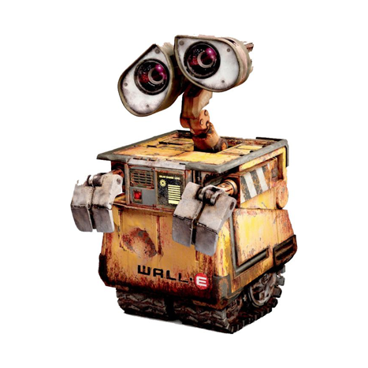
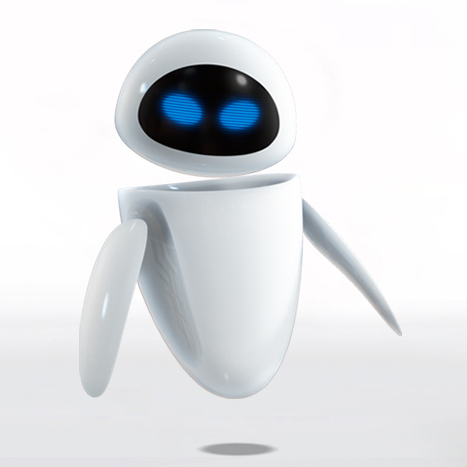
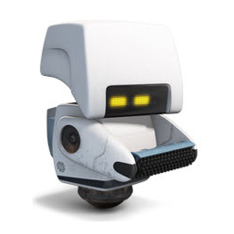
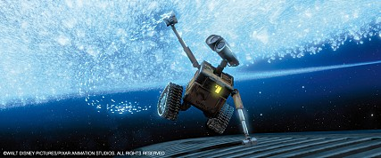
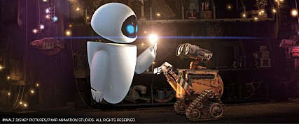
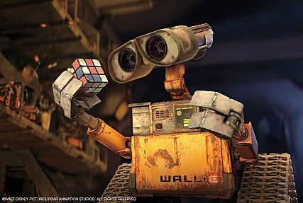

Wall E
전 지구의 쓰레기를 처리하기 위해 BnL사에서 제작한 양산형 쓰레기 처리 로봇.

EVE
픽사의 애니메이션 월-E에 등장하는 로봇이자 히로인. 하얗고 매끈하며 동그란 달걀형 몸체를 한 여성 로봇.

MO
불순물 감지 센서를 장착하여 오염 물질을 감지, 청소하는 역할을 수행하며 월 E의 협력자가 됨.
줄거리
예측불허! 차세대 영웅, 그가 지구 구하기에 나섰다!
텅 빈 지구에 홀로 남아 수백 년이란 시간을 외롭게 일만 하며 보내던 월-E (WALL-E: Waste Allocation Load Lifter Earth-Class, 지구 폐기물 수거-처리용 로봇). 그런 그가 매력적인 탐사 로봇 ‘이브’와 마주친 순간, 잡동사니 수집만이 낙이던 인생에도 소중한 목표가 생긴다.



 7.88
7.88명대사
"난 생존이 아니라 생활을 하고싶다고! (I don't want to survive I want to live!)"